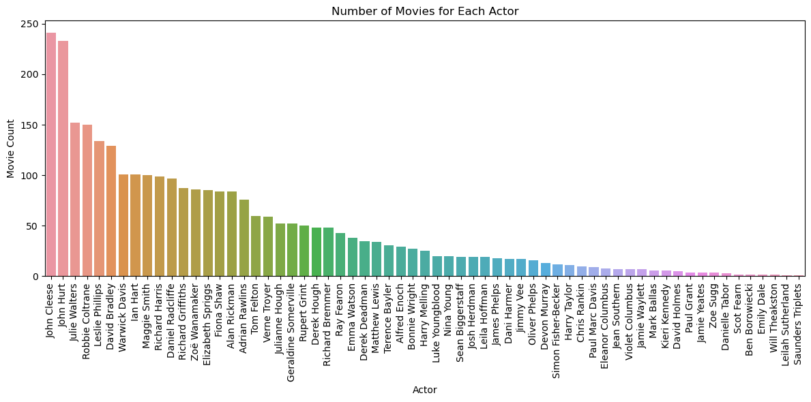

# to run
# scrapy crawl tmdb_spider -o movies.csv -a subdir=671-harry-potter-and-the-philosopher-s-stone
import scrapy
class TmdbSpider(scrapy.Spider):
# Give a unique identifier for spider name, used to trigger this certain spider from the command line
name = 'tmdb_spider'
def __init__(self, subdir=None, *args, **kwargs):
"""
Initialize the spider instance with a specific movie's subdirectory.
This subdirectory is essential for crafting the starting URL from which the spider begins scraping.
:param subdir: Subdirectory for the movie on TMDB site, used to build the start URL
:param args: Positional arguments
:param kwargs: Keyword arguments
"""
super(TmdbSpider, self).__init__(*args, **kwargs)
# Set the starting URL to scrape based on the provided movie subdirectory.
self.start_urls = [f"https://www.themoviedb.org/movie/{subdir}/"]
def parse(self, response):
"""
Parses the main movie page, extracts the from the full cast, and makes a request to that link
:param response: The response object containing the content of the movies' main page
"""
# Extracts the link to the "full cast and crew" page from the main movie page
full_cast_link = response.css('p.new_button a::attr(href)').get()
if full_cast_link:
# If the link is found, make a request to the cast list page
yield response.follow(full_cast_link, self.parse_full_credits)
def parse_full_credits(self, response):
"""
Parses the "Full Cast & Crew" page, extracts each individual actor's personal page links, and makes requests to those pages.
:param response: contains the content of the "Full Cast & Crew" page.
"""
# Selects only the first "panel pad" section of the page using CSS selectors
first_panel_pad = response.xpath('(//section[contains(@class, "panel") and contains(@class, "pad")])[1]')
for actor in first_panel_pad.css('ol.people.credits > li'):
# Extracts the individual actor page link，not including crew members
actor_page = actor.css('a::attr(href)').get()
if actor_page:
# Makes a request to the actor's personal page, directing go to its acting role section
yield response.follow(actor_page + '?credit_department=Acting', self.parse_actor_page)
def parse_actor_page(self, response):
"""
Parses the actor's personal page, extracting information about the movies or TV shows the actor has participated in.
:param response: The response object containing the content of the actor's personal page.
We want only the works listed in "Acting" section for the actor page.
We need to determine both the name of actor and the name of each movie/show.
"""
# Extracts the actor's name
actor_name = response.css('h2.title a::text').get()
# Directly gets all texts of this structure by using xpath a[@class='tooltip']/bdi
movies = response.xpath('//a[@class="tooltip"]/bdi/text()').getall()
# Extracts the title of the work
for title in movies:
# Yields a dictionary (two key-value pairs) containing the actor's name and the title of the work
yield {
'actor': actor_name,
'movie_or_TV_name': title
}Homework 2: Web Scraping Tutorial: Scraper Writing & Results Analysis
Introduction
In today’s tutorial, we are going to learn how to use webscraping to build a “recommender system”, answering the following questions:
What movie or TV shows share a actor with your favorite movie or show?
We assume that if Movie Y has many of the same actors as your favorite Movie X, you might also enjoy Y. To see how we develop a webscraper, please scroll down to section 2.
1. Setup
1.1 Locating the Starting TMDB Page
We need to first choose one favorite movie on TMDB page, here I choose “Harry Potter and the Philosopher’s Stone”, with url: https://www.themoviedb.org/movie/671-harry-potter-and-the-philosopher-s-stone/
1.3 Initialize Your Project
conda activate PIC16B-24W
scrapy startproject TMDB_scraper
cd TMDB_scraperUse this code to initialize the project
1.4 Tweak Settings
Add the folloing line to the file settings.py to prevent scraper from downloading too much data while you’re still testing.
CLOSESPIDER_PAGECOUNT = 20PS: you will remove this line later!
PPS: If you run into 403 Forbidden errors latter, you need to change user agent line in setting.py, one way to change user agent on scrapy shell is
scrapy shell -s USER_AGENT='Scrapy/2.8.0 (+https://scrapy.org)' https://www.themoviedb.org/...2. Write Scraper
In this section, we create a file tmdb_spider.py inside the spiders directory called tmdb_spider.py. Note we will write scraper codes in this file.
After successfully build the spider, we can run this command in terminal:
scrapy crawl tmdb_spider -o results.csv -a subdir=671-harry-potter-and-the-philosopher-s-stone
Which run the spider and save a results.csv file with columns for actor names and the movies and TV shows on which they featured in.
Once the spider is fully written, we can comment out the line
CLOSESPIDER_PAGECOUNT = 20
in the settings.py file, then run this command in the terminal to generate a results.csv
scrapy crawl tmdb_spider -o results.csv -a subdir=671-harry-potter-and-the-philosopher-s-stone
This results.csv will contain columns for actor names and the movies and TV shows on which they featured in.
3. Make Your Recommendations: Visualization
In this section, I will introduce visualization of numbers of shared actors.
import pandas as pd
import matplotlib.pyplot as plt
import seaborn as snsresults.csv results view in table
data=pd.read_csv('results.csv')
print(data) actor movie_or_TV_name
0 Daniel Radcliffe Have I Got a Bit More News for You
1 Daniel Radcliffe David Holmes: The Boy Who Lived
2 Daniel Radcliffe 100 Years of Warner Bros.
3 Daniel Radcliffe Mulligan
4 Daniel Radcliffe Digman!
... ... ...
2956 Rupert Grint The View
2957 Rupert Grint GMTV
2958 Rupert Grint The Tonight Show with Jay Leno
2959 Rupert Grint An Audience with...
2960 Rupert Grint Today
[2961 rows x 2 columns]print(data.head(35)) actor movie_or_TV_name
0 Daniel Radcliffe Have I Got a Bit More News for You
1 Daniel Radcliffe David Holmes: The Boy Who Lived
2 Daniel Radcliffe 100 Years of Warner Bros.
3 Daniel Radcliffe Mulligan
4 Daniel Radcliffe Digman!
5 Daniel Radcliffe Extrapolations
6 Daniel Radcliffe Weird: The Al Yankovic Story
7 Daniel Radcliffe The Lost City
8 Daniel Radcliffe Harry Potter 20th Anniversary: Return to Hogwarts
9 Daniel Radcliffe (K)nox: The Rob Knox Story
10 Daniel Radcliffe Unbreakable Kimmy Schmidt: Kimmy vs. the Music...
11 Daniel Radcliffe Unbreakable Kimmy Schmidt: Kimmy vs. the Reverend
12 Daniel Radcliffe Endgame & Rough for Theatre II
13 Daniel Radcliffe Escape from Pretoria
14 Daniel Radcliffe Guns Akimbo
15 Daniel Radcliffe The Kelly Clarkson Show
16 Daniel Radcliffe Playmobil: The Movie
17 Daniel Radcliffe Miracle Workers
18 Daniel Radcliffe Beast of Burden
19 Daniel Radcliffe 2 Dope Queens
20 Daniel Radcliffe The Robot Chicken Walking Dead Special: Die wa...
21 Daniel Radcliffe Jungle
22 Daniel Radcliffe National Theatre Live: Rosencrantz & Guildenst...
23 Daniel Radcliffe Lost in London
24 Daniel Radcliffe Imperium
25 Daniel Radcliffe Swiss Army Man
26 Daniel Radcliffe Now You See Me 2
27 Daniel Radcliffe Victor Frankenstein
28 Daniel Radcliffe The Gamechangers
29 Daniel Radcliffe The Late Show with Stephen Colbert
30 Daniel Radcliffe Trainwreck
31 Daniel Radcliffe Tom Felton Meets the Superfans
32 Daniel Radcliffe Hot Ones
33 Daniel Radcliffe BoJack Horseman
34 Daniel Radcliffe Trailblazer Honors"""
Counts the occurrences of each unique value in the 'actor' column of the dataframe 'data' and returns a Series.
The index of the Series will be the actor names, and the values will be the count of movies each actor has appeared in.
"""
actor_counts = data['actor'].value_counts()Bar-Plot Visualization
actor_countsactor
John Cleese 241
John Hurt 233
Julie Walters 152
Robbie Coltrane 150
Leslie Phillips 134
...
Ben Borowiecki 2
Emily Dale 2
Will Theakston 2
Leilah Sutherland 1
Saunders Triplets 1
Name: count, Length: 63, dtype: int64"""
This script visualizes the number of movies each actor has appeared in using a bar plot.
"""
# Creates a new figure with a specified size.
plt.figure(figsize=(12,6))
# Creates a bar plot using seaborn. The x-axis represents actors, and the y-axis represents the count of movies.
# `actor_counts` is assumed to be a pandas Series where the index contains actor names and values represent movie counts.
sns.barplot(x=actor_counts.index, y=actor_counts.values)
# Rotates the x-axis labels (actor names) by 90 degrees to prevent overlap and improve readability.
plt.xticks(rotation=90)
# Sets the label for the x-axis as 'Actor'.
plt.xlabel('Actor')
# Sets the label for the y-axis as 'Movie Count'.
plt.ylabel('Movie Count')
# Sets the title of the plot as 'Number of Movies for Each Actor'.
plt.title('Number of Movies for Each Actor')
# Adjusts the layout to make sure everything fits within the figure area without any clipping.
plt.tight_layout()
# Displays the plot.
plt.show()